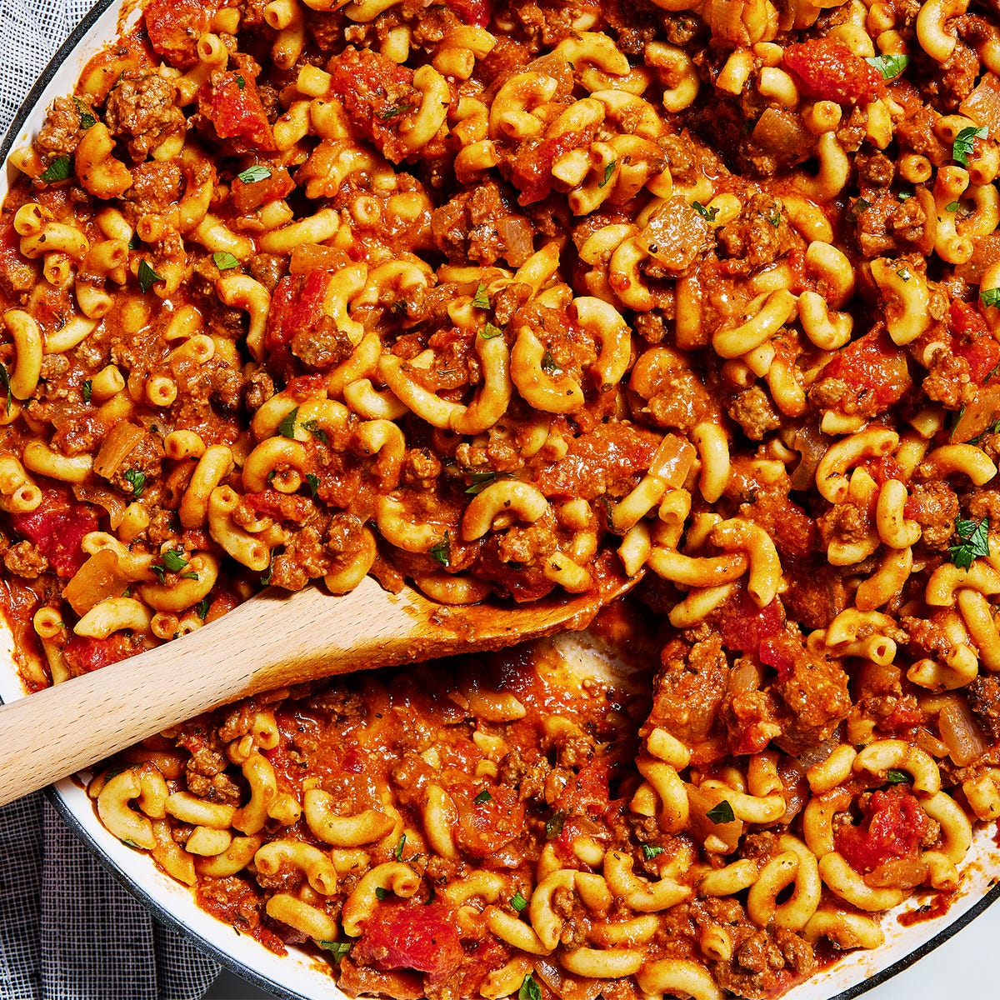

Goulash

Description
A classic nostalgic comfort dish, goulash is the hearty weeknight dinner I'll always crave. The best thing about this goulash recipe? Everything cooks together in one pot—even the pasta! Cooking the macaroni directly in the goulash means the pasta gets to soak up all that beef and tomato flavor while simultaneously releasing some of its starch into the pan, thickening the goulash to create a hearty, comforting stew. Trust me—once you cook pasta this way, you'll never go back to boiling water again. Read on for all of my tips and tricks for making this staple cozy meal.
Ingredients
- 2 Tbsp. extra-virgin olive oil
- 1 medium yellow onion, chopped
- 2 cloves garlic, finely chopped
- 1 lb. ground beef
- Kosher salt
- Freshly ground black pepper
- 1 Tbsp. tomato paste
- 1 (15-oz.) can diced tomatoes
- 1 (15-oz.) can tomato sauce
- 1 1/4 cups low-sodium beef broth
- 1 tsp. Italian seasoning
- 1 tsp. paprika
- 1 1/2 cups elbow macaroni
- 1 cup shredded cheddar
- Chopped fresh parsley, for serving
Steps
- In a large skillet over medium heat, heat oil. Add onion and cook, stirring occasionally, until softened, about 7 minutes. Add garlic and cook, stirring, until fragrant, about 1 minute more.
- Add ground beef, season with salt and pepper, and cook, breaking up with a spoon, until no longer pink, about 6 minutes. Drain fat.
- Add tomato paste and stir to coat, then pour in diced tomatoes, tomato sauce, and broth. Add Italian seasoning and paprika, then stir in macaroni. Bring to a simmer and cook, stirring occasionally, until pasta is tender, 10-15 minutes.
- Stir in cheese until melted; season with salt and pepper, if needed. Remove from heat. Top with parsley.
Home